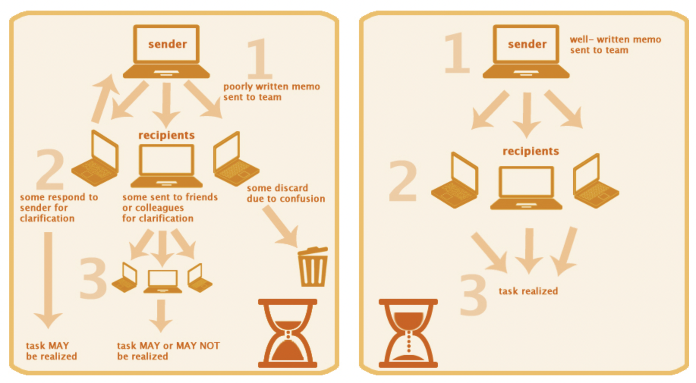

Writing in Business¶
Writing skills are fundamental in business. It’s increasingly important to be able to convey content in a tight, logical, direct manner, particularly in a fast-paced technological environment.
—Respondent, Writing: A Ticket to Work… or a Ticket Out: A Survey of Business Leaders
Introduction¶
“According to a survey of large U.S. companies, the jobs of two-thirds of management-level employees include significant writing such as emails, presentations, technical reports, formal reports, and memos.”
“Eighty percent or more of companies in the financial sector (including insurance and real estate) and a slightly smaller percentage in the rest of the service industry consider writing in their hiring decisions.”
More time is spent on writing than realized.
Writing is becoming more Important¶
Even the modern digital media rely more on old-fashined writing.
“Globalization has added to the demand for business writing. Work teams are often scattered throughout the world. Members may rarely or never meet face to face. Due to time differences and other obstacles, much of their communication is written. Writing skills now play a central role in how well people work together.”
“Although English has become the common language of international business, differences in the cultural norms of audiences complicate communication across borders. A written report that seems laborious and overly formal to members of a global team in one country may strike team members from another country as well paced and respectful. Communication skills must incorporate some awareness of cultural differences.”
Writing Clarifies and Preserves Thinking¶
“The transcript of a spontaneous conversation typically contains many verbal stumbles, pauses, false starts, gaps in logic, unfinished thoughts, and unexplained references.”
“Oral speech isn’t well suited for communicating large quantities of information or extended thinking on a complicated topic.”
Writing helps preserve thinking.
The Writing Process¶
We don’t have the same capacity for speaking and writing. Writing is usually difficult. Writing takes more effort than speaking.
“Some research on workplace writing indicates that experienced writers use a conscious process for writing while inexperienced writers don’t. The difference is apparent in the finished products.”
Writing process can be a practical tool for managers.
Every writer has unique writing process.
More attention is required on how to write instead of what to write.
Experienced writers considers the writing process with four major steps:
Preparing
Drafting
Revising
Editing and Correcting
The above steps may not follow the same sequence always.
Preparing¶
“Preparing consists of doing research (if necessary), defining your purpose, understanding the audience, and organizing your thinking in a writing plan. The product of preparing is a writing plan you can follow for the first draft.”
To not get overwhelmed by the writing process, plan first about what needs to be communicated.
Research and Notes¶
Preparation involves researching over the topic and taking necessary notes.
Information sources are, but not limited to, physical documents, company intranet, online databases, and the web.
“The information can provide compelling evidence for an argument, but it can also lead to information overload that paralyzes thought. Everyone in business experiences some degree of information overload. To limit it when writing, use purpose and audience to set boundaries on the information you need for a message.”
“Notes can be used for more than recording information. They can be a dialog with your material. You can write down questions you need to answer with research or in the message you will write. You can capture points to include in the writing and begin to map out an organization.”
Plagiarism¶
“Plagiarism occurs when “a writer deliberately uses someone else’s language, ideas, or other original (not common-knowledge) material without acknowledging its source.”
If the source is not provided and then everything in a document is considered to be the original material of the author.
Plagiarism violates trust with the audience and do a real damage to an communicators’ reputation.
“It is never acceptable to use word-for-word content from another source without using quotation marks and a source note. Paraphrasing content or using specific information or data from another source requires a source note.”
Generating Ideas¶
“Two of the best ways to think of ideas for the writing plan are asking questions and talking to people.”
The Checklist: Analyzing a Communication Situation provides all of these questions to help you generate ideas.
“Content can come from people who have knowledge you can use, who have communicated on the same topic, and who have received similar information in the past.”
“Be opportunistic in your search for content relevant to your writing. A reference in an online article, a tweet, or a colleague’s casual remark could lead to high-value content.”
Organizing Ideas in a Writing Plan¶
Organize the content in a logical structure by grouping similar points together and arranging in a suitable order.
“Grouping makes the leap from discrete ideas to organized thought. As material is sorted by similarity, relationships among the groups emerge. These relationships help you define a logical order.”
Format of the plan can be as simple as bullet points or something like mind map. The format does not matter, use whatever works for you.
Drafting¶
“In the drafting stage, you compose your thoughts in words, sentences, and paragraphs. The goal of drafting is to write a message that expresses your thinking but isn’t necessarily audience-ready, meaning that the draft can have faults and mistakes such gaps in logic or evidence.”
Need for Speed¶
Writing speed has a limit which is based on the speed of your hand unlike brain which can do it’s job of thinking at a much faster rate. This can make us lose some of our thoughts while writing.
Ignore the perfiontionism. Don’t stop for correcting the mistakes in styles.
Why revising helps drafting¶
“During the revision stage, you take a step back and work with the draft to improve its organization, content, and anything that compromises readability such as sentence fragments or ambiguous statements.”
First draft will always be imperfect and no concern should contraint the process of capturing our thinking.
Writing the draft¶
Here are practices that can make drafting more productive and efficient.
You don’t have to begin at the beginning. - You don’t have to write each section in the order in which it appears in your writing plan. Write what you know, wherever it belongs in the plan.
Don’t worry about the small stuff.
Correctness and sentence style come later. Turn off the grammar checker. It gets in the way of thinking. Also, most grammar checkers are wrong more often than not. Turn off the spell checker. It’s also a distraction that interrupts thought.
Grab thoughts in any form. - Capture your thoughts even if they don’t present themselves in complete sentences. When you need a piece of information but know what you want to say about it, don’t interrupt yourself to look for it. You can insert it later.
Don’t stick with a bad plan. - If your writing plan isn’t working, stop and rework the plan. Don’t try to write yourself out of a poor plan.
Revising¶
Revising is the stage where the draft is reviewed carefully by focusing on the content and the organization.
Things that can be ignored in this stage - writing style, tone and mistakes such as faulty grammer.
“The goal of revising is to make the substantive changes that are necessary to achieve your purpose.”
“There are two keys to this stage:
Reading the draft from the audience’s point of view
Making necessary changes even if they are major”
Reading as the Audience Would¶
“Once you have a first draft, shift to the audience’s point of view.”
The following revision questions ask you to think about the draft from the audience’s point of view.
Have I included all of the content necessary for my purpose?
Is the length and amount of detail appropriate for the purpose and the audience?
Are there any gaps or redundancies in the content?
Can my readers easily follow the logic of the writing?
Are the sentences of each paragraph in a logical order?
Is my tone appropriate to the audience and occasion?
“To make sure you have focused on your key points, ask yourself this question: What would I say if I had only 60 seconds to get my point across to the audience? The answer to this question tells you what has to be included and what may not be necessary.”
What if the Draft doesn’t work?¶
There is a huge posiibility that we might change our mind while writing the draft.
When we change of our mind, we are essentially changing the purpose and thus writing plan has to be changed accordingly. Do not hesitate to go back to preparing stage.
Feedback from others¶
Never be completely objective about your own writing.
Exercise displine and courage to commit time for major revisions.
“To compensate for your lack of objectivity, request feedback from others.”
“A reader can serve as a representative of your audience. He or she can confirm whether your writing works and isolate sections where revisions might be needed.”
Editing and Correcting¶
“In the editing and correcting stage, review the draft for tone; sentence style; and correct grammar, spelling, and other mechanical issues such as consistent treatment of numbers. Editing consists of making your sentences as easy to read as possible and adjusting the tone without losing any essential meaning. The goal of correcting is to fix mistakes in grammar, spelling, punctuation, and other writing mechanics.”
Editing¶
Sectence is the target of editing.
At this stage in the process, ask yourself these questions:
Can my reader easily understand my sentences?
Is the writing style considerate of the reader? (Is it clear and economical?)
Is the tone suitable for the purpose, audience, and topic?
Correctness¶
This is the final stage for making the content audience-ready.
“Errors in a written message force readers to perform a fix-up, the process of mentally stopping to correct a mistake and thus understanding the meaning of words or sentences. Each fix-up diverts the reader from the process of building meaning from the message. A large number of fix-ups destroys the coherence of a message.”
“Correctness also gives you credibility.”
“Use a grammar checker as a guide, and carefully read for grammar and punctuation mistakes. Turn on the spell checker, but don’t rely on it completely. Proofread your writing to identify spelling errors and mistakes in word usage that the spell checker misses.”
“Consider these suggestions for correcting a document:”
Look for words you frequently misspell. - Use the Find and Replace function in a word-processing program. Type misspellings in the search box and see if they occur anywhere.
Look for “personal” grammatical mistakes. - Do you make the same grammar mistakes frequently? Search for them, using the Find and Replace function.
Use online resources. - For quick answers about grammar, punctuation, and mechanics such as capitalization, use online resources. One of the best is The Owl, a free site developed by Purdue University.
Concentrate on proofreading. - You may start editing sentences instead of reading them for correctness, making the process longer and potentially missing errors. One trick for avoiding this is to proofread from the end of the document and move backward paragraph by paragraph. Another approach is to underline sentences you want to edit and continue proofreading. You can edit the underlined sentences later.
What is good business writing?¶
Differentiating qualities of good and bad business writings:
Qualities |
Good Writing |
Bad Writing |
|---|---|---|
Time |
Best use of readers’ time |
Takes more time than necessary |
Effect on audience members |
Informs, structures, and stimulates their thinking |
Confuses, frustrates, or antagonizes them |
Action |
Facilitates action |
Blocks or leads to misguided action |

Four Qualities of Business Writing¶
“In this course, good writing is defined in relation to audiences using American English, in part because it serves as the common language of international business. When using English, however, you may have to adapt it to local audiences.”
Basic needs of audiences changes depending on their culture.
“The contrasts between low-context and high-context cultures have special significance for written communication. Low-context cultures, like those in North America and Europe, tend to value individualism, logic, and action. High-context cultures, like those in Asia, tend to value group membership, personal relationships, and the preservation of consensus. In low-context cultures, readers want authors to state explicitly what they think, to prove it, and to contribute to getting things done. Low-context writing tends to be direct, assertive, and concise. In high-context cultures, readers expect authors to imply much of their meaning, to defer to the group, and to foster consensus. High-context writing tends to be oblique, deferential, and circuitous. One style isn’t superior to the other because each serves the norms and needs of distinct audiences.”
Characteristics such as above affect audience expectations for written communication.
Four characteristics of good business writing
Business Audience Need |
Quality |
Definition |
|---|---|---|
Tell us your opinion. |
Direct |
Say what you mean |
Respect our time. |
Concise |
in the fewest words possible |
Do not make us work hard to understand you. |
Clear |
in a way that is easily understood |
Present your thinking in an easy-to-follow order. |
Logical |
with a logical organization. |
Direct Writing¶
Stating the thoughts early in written communication is essential in direct writing. Convey the audience what they are here for.
“Direct writing tells the audience the answers to these two questions:”
What is this about?
Why should I read it?
“The elevator pitch is an exercise in directness. An individual has 60 seconds to convince someone, for example, the CEO. With little time to speak, she can’t afford to delay the main point. If she does, the CEO will cut her off. A good question to ask when planning a written communication is: What would I say if I had only a minute to get my point across?”
Concise Writing¶
“Concise writing makes economical use of words. Think of words as the price the audience has to pay to understand what the writer has to say. In American business English, readers want to pay the lowest price.”
“Conciseness flows from respect for readers and from the knowledge that the aim of writing is to provide them with something valuable.”
Avoiding Verbosity and Grandiosity¶
Misconception: “Long and wordy sentences show the audience that the writer is well educated and knows what she’s talking about. Verbosity = intelligence + expertise”
“Good writers choose simple language when it expresses the meaning they want, using less common words and technical terms only when the meaning of those words is essential to the message.”
Clear Writing¶
Clear writing helps in seeing the meaning of the words while the unclear wiriting hinders the understanding the meaning in the communication.
Clear writing is achieved by clearfully constructed sentences that shows specific connections between ideas.
“Business buzzwords, clichés, and other misuses of language disrupt clear expression because they deliver little meaning and often make sentences ambiguous.”
Logical Writing¶
“Readers depend upon the logic of sentences to construct meaning in their brains. When sentences are not in an order that makes sense to readers, they stop and try to repair the logic. But they may not have the patience to do it and instead stop reading.”
Using Visual Cues¶
“Good document design reinforces the logical organization of a message for the reader. The visual style of your message should be the same as the writing style: simple. One of the biggest mistakes business writers make is to decorate a message with too many visual devices. Their intention, to aid the reader, is good. Unfortunately, the result is a visually busy message that distracts the reader.”
Methods providing visual cues to the reader:
Visual Cues |
Functions |
|---|---|
Paragraphs |
Makes visible major chunks of the content. |
White space |
Separates and sets off words. |
Headings |
Signal the logical divisions of a message. |
Lists |
Make multiple items easier to see and understand. |
Type |
Makes text easier to read. |
Paragraph¶
“Paragraphs and sentences are the two fundamental units of content. A paragraph is a visual element of a message set apart through an indented first line or white space above and below it.”
“When readers see a paragraph, they expect it to contain related sentences about a single topic. If it doesn’t, its visual distinctness deceives the reader.”
“Long paragraphs are difficult for readers to process. The meaning of a message becomes easier to discern when it is broken into smaller units of meaning. A topic sentence, which summarizes the meaning common to the group of sentences making up the paragraph, also facilitates reading comprehension.”
White Space¶
White space increase the readability of a message.
“White space is the most common and effective method of grouping words into distinct units. White space is used between and around paragraphs, before and after headings, and around exhibits and other visuals such as charts. In your written messages, be generous with white space. A cramped, claustrophobic document design makes reading harder.”
Headings¶
“Headings signal the logical divisions of a written message. They allow readers to skim a document before reading it and form an impression of its structure and meaning. They also serve as navigational signals as the readers work through the message. In the end, headings enhance the readers’ retention.”
“Keep your heading structure simple. A message with many levels and styles of headings looks complex. Generally, as text becomes more visually complex, readers become more reluctant and struggle more to comprehend it. Two or three levels of headings should be all you need.”
“Headings should specifically describe the content below them, but they should be very concise.”
“Typographically, the distinctions among levels of headings should be simple. Use fonts, boldface, italics, and capitalization to distinguish heading levels. Headings should have extra white space above and below.”
Lists¶
“Lists serve readers by displaying a series of related items vertically instead of horizontally in a normal line of text. The technique simplifies reading and improves comprehension. Bulleted lists suit most content. Use numbered lists when the sequence of items is important, such as steps in a process.”
“The guidelines for using lists are as follows:”
Don’t overuse them.
Keep the lists short.
Keep the list items short.
Don’t use multiple levels (except in an outline).
Use simple bullets to mark each item.
“A numbered list tells readers that the order of items is an integral part of their meaning.”
Type¶
“Typeface is often overlooked as a visual resource.”
“There is some evidence that serif fonts are easier to read on printed pages, especially when the document is long. Sans serif type is used extensively on web pages because it tends to be bigger and have more space between letters than serif type.”
Fonts¶
“Contemporary typography has a huge range of font choices, from the traditional (Times New Roman) to the new (Verdana), and from formal (Constantia) too informal (Comic Sans MS). Your freedom to choose fonts might depend on organizational culture, but there are some safe choices. Fonts like Chalkboard that imitate handwriting may seem like a good change of pace from standard fonts, but when used for long messages, they are hard to read.”
Recommendations for business writings:
Printed or On-Screen Documents |
Web Documents |
|---|---|
Times New Roman |
Verdana |
Garamond |
Arial |
Size¶
“In business documents, the size of the font used for text is often too small. A factor you may not think of, particularly if you’re young with good eyesight, is that older readers often have trouble reading small type. A good choice for business documents is an 11- or 12-point font size.”
Emphasis¶
“With the help of computers, writers can create typographic emphasis. Emphasis includes the use of faces, fonts, color, special effects such as shadows, and a long list of other techniques.”
“Emphasis in document elements such as headings and exhibits is useful as a meaningful signal to readers. But repeated use of emphasis (for example, bold or italic) in the text of a business document is not a good idea for two reasons. It pulls the eye around the text, disrupting concentration, and it implies that readers won’t realize the significance of words or phrases without visual help.”
Writing Style¶
“Writing style refers to how a writer builds sentences. Every writer has developed a writing style of some kind.”
“Style can be defined by answers to questions like these:”
Does your writing tend to include short sentences and action verbs, or are you more comfortable with longer sentences and frequent use of passive voice?
Do you like to use words that show you have a large vocabulary?
Do you write fairly simple sentences or complicated ones?
If you are writing English as a second language, does your writing style in your first language have any effect, negative or positive, on your writing style in English?
A Writing Style for Business¶
“The four qualities of good communication—directness, conciseness, clarity, and logic—define a writing style for business. Remember that you have a restless, easily distracted, and often interrupted reader to satisfy. To achieve the qualities of good communication, use the Writing for Action Style.”
“The Writing for Action Style has five building blocks:”
The sentence structure clearly links ideas.
Subjects perform actions.
Verbs express action.
Objects finish the action.
Each sentence uses plain language.
Using the Writing for Action Style¶
“Reminding yourself to use a specific style while writing a draft can interfere with self-expression. Checking the style of each sentence after you write puts thinking on hold. Use the editing stage to streamline sentences in the Writing for Action Style. Over time, your default writing style will improve, reducing the amount of editing you need to do.”
“To edit sentences using the Writing for Action Style, use the following five-step process.”
Step |
Editing Action |
Example |
|---|---|---|
1. Find the action. |
What is the action in the sentence? Find the main subject and verb. |
Quite a few services, most critical, were provided to almost the entire community by the nonprofit. |
2. Find the main idea. |
Identify the “kernel” sentence—all the words expressing the main action: the subject performing the action, the verb that expresses the action, and the object that receives the action. |
Quite a few services, most critical, were provided to almost the entire community by the nonprofit. |
3. Express the action. |
When possible, use an action verb to express the action in the kernel sentence. |
The nonprofit provided services to the community. |
4. Assess the rest. |
Inspect the sentence for words that add essential meaning. |
Quite a few services, most of them critical, were provided to almost the entire community by the nonprofit. |
5. Add to the kernel. |
Integrate the additional essential meaning into the sentence. |
The nonprofit provided critical services to the entire community. |
Passive Voice¶
Don’t use passive voice sentences in written communication unless it is absolute necessity.
Passive voice removes the subject performing the action which might add to confusion and invites wordliness.
Plain Language¶
Plain language is essential for good writing style.
“In the earlier discussion, a distinction was made between legitimate technical terms that bolster clarity and buzzwords that weaken it. Clichés, euphemisms, and hedge words can also reduce clarity.”
“Business buzzword - A business term that might once have had meaning but is now overused or misused.”
“Cliché - A trite, overused word or phrase that isn’t necessarily specific to business.”
“Euphemism - A word or term that obscures or understates a negative or sensitive meaning.”
“Hedge word - A word that enables a writer to avoid taking a position.”
Business Buzzwords¶
“Business has a large and ever-changing vocabulary of buzzwords.”
“Buzzwords often substitute vagueness for clarity. They can be the product of lazy writing—the writer finds it easier to use buzzwords instead of more precise expressions.”
Clichés¶
They are shortcuts to meanings or prepackaged expressions. They can be tiresome to read.
“Clichés can substitute for words that have more meaning for the intended audience.”
Euphemisms and Hedge Words¶
“When writers have to express a negative of some kind, they can be tempted to blunt or soften it with euphemisms. Hedge words serve writers by avoiding commitment to a point of view. The techniques can comfort a writer afraid of the audience’s reaction to candor. But they can also lead to the bad habits of blurring the truth and evading responsibility. And your audience may not take you seriously.”
Tone¶
“Tone is the writer’s attitude toward the audience and the subject as conveyed through the message.”
Every speech have certain kind of tone.
Calibrate tone according to purpose, audience and topic.
“Attitude has a large emotional component. Descriptions of tone use words like friendly, hostile, courteous, detached, humble, confidence, and enthusiastic. We don’t choose our feelings; we have them. But we can control how we express feelings in writing.”
“Tone can tell the audience that you like them or are disappointed in them.”
“Your audience reads tone into written statements. To avoid misunderstandings, give the reader enough information to read the words with your intended tone.”
Tone in Writing¶
“Oral communication gives the audience rich information to gauge tone: words, voice, and appearance of the speaker such as facial expression and body posture. In writing, the information is much more limited. Even so, tone can be affected by almost any aspect of writing, from word choice and sentence structure to grammar and punctuation.”
“Variables in a communication situation such as your relationship with the audience, status and power differences, age, organizational culture, and national culture can shape tone.”
“In the message, the subject, point of view, writing style, and word choice can affect tone.”
A calm and respectful tone fits in every situation in business.
“Consider tone in your writing with these questions:”
What tone best suits my purpose and audience?
What other factors about tone, such as status difference, do I need to take into account?
Does my writing reflect the tone I intend?
Guaging our tone is challenging. Our writing may not have the same tone everytime. Read all of the message carefully to gauge the tone or ask feedbacks from other.
Informative Writing¶
Purpose of informative writing is to describe or explain an object, location, process, and many other similar subjects.
“Description communicates the details, characteristics, parts, and qualities of a person, object, or other subject. Explanation complements description by stating how or why something happens, is created, is performed, is valued, and so forth. In the business world, informative writing often combines description and explanation.”
Compposing the Informative Memo¶
Purpose directs the needed information and content.
Information has to be callected from all the sources possible.
It can also be collected from the people who have pertinent information about the subject.
Organizing the memo¶
Content should be in appropriate quantity, neither too much nor too low.
“One benchmark is the average length of memos in your organization that have content comparable to yours. Writing a memo that is much longer or shorter than the norm can violate the audience’s expectations and trigger negative reactions. Get to know your organization’s norms about the length of documents—they may be unstated. You can please audiences by writing messages more concisely than others, but you shouldn’t sacrifice critical points or nuances. At the same time, some topics need more words to do them justice than others. In those cases, let the audience know why extra length is necessary.”
Organic and Analytical Organizers¶
“Informative writing in business often describes a process. A key step in creating a writing plan for a process is arranging the steps in the correct order.”
Use the templates for organizing the message.
Drafting¶
“A reasonably settled outline or writing plan expedites writing a draft.”
No need to keep all the points in your head or worry about the order of content while drafting.
Opening and Conclusion¶
With the help of draft, writing opening and conclusion becomes easier.
Openings helps to seize reader’s attention and motivates them to continue.
“Conclusions let readers go with a final thought or worthwhile piece of information.”
Opening an Informative Message¶
Don’t grab readers with verbal pyrotechnics—colorful language and daring or provocative claims.
It is necessary to give audience some purpose to read.
Opening should tell the reader about the information being delivered and need of that information.
Opening should also connect the new information with the information that reader already knows, whenever possible, in order to improve reader’s comprehension and retention.
“Good business writing speaks to the reader directly, concisely, clearly, and logically.”
Concluding an Informative Message¶
“The conclusion can serve purposes such as these:”
Reinforcing an especially important piece of information
Pointing the reader to other sources of similar information
Telling the reader how to get questions answered
Conclusion may not be always required.
“Sometimes you don’t need a conclusion. In a description-explanation of a process, the process has a last step that should be obvious to the reader. A conclusion should always have a value for the audience. It should not be a contrived summation in flowery language.”
Revising the draft¶
“The goal of revising a draft is to improve the expression of your ideas for maximum effect on readers. In the draft stage, you engage your ideas and give them a voice with as little filtering as possible. In the revising stage, you read from the audience’s point of view. The revising stage is the pivotal moment in shifting from a private message (one that means something to you) to a public message (one that means something to others).”
“Revision concentrates on the content, organization, and tone of the draft.”
“Set aside the first draft for a day or more if possible. Our brains need sleep to consolidate memories, and the break helps us look at the draft with more energy and objectivity.”
Editing and Correcting¶
Editing and correcting may seem to introduce an unnecessary delay but it is required to as poorly written sentences and mistakes in grammar, punctuation, and mechanics cause readers to question the writer’s competence and credibility.
It is not a good idea to skip this step.
“Have a friend or colleague with good editorial skills assist you, or take another break. With just an hour or two doing something else, you can come back to your writing and see style problems and mistakes that you were oblivious to before you stopped work.”
Editing¶
“The goal of editing is to make the writing as readable as possible.”
Use “The Writing Style” for editing.
Correcting¶
“Ask people you work with how strict your readers are about grammar, spelling, punctuation, and mechanics.”
“In any case, numerous mistakes slow readers down and can reduce their comprehension of the overall message. When a reader encounters a mistake, she performs what reading experts call a fix-up. She determines what the word or sentence is supposed to mean. Of course, each fix-up interrupts the process of building meaning from the message. Many fix-ups fragment the message for the reader and raise questions about the author’s competence.”
Persuasive Writing¶
“The “Planning Communication” module states that persuasive writing motivates an audience to think, feel, or act in the way the communicator intends. Persuasion has power: It can change people’s thinking and cause them to have strong emotions and do things they might not otherwise do. But it is up to the audience to decide whether to ally themselves with the communicator’s purpose. Persuasion often fails, but one unsuccessful attempt doesn’t mean the communicator won’t have more opportunities to try—or eventually realize her purpose.”
Persuading vs Informing¶
“Using writing to persuade an audience is a more difficult and complex task than using it to inform. People will usually accept information once they understand its significance to them. On the other hand, persuasion addresses subjects about which people disagree. When adults think or feel a certain way about a subject, it can be hard to change their minds.”
“Change entails risk and risk often makes people uncomfortable or afraid. One persuasive communication often won’t overcome audience resistance, particularly when the stakes are high. So persuasion becomes a process consisting of multiple communications.”
“Persuasion requires persistence. The same message—or variations of it—may have to be sent time after time. (In fact, research indicates that persistence is an essential means for minorities to influence majorities.)”
Composing Persuasive Memo¶
“Creating persuasion involves appeals to reason, emotion, and character. The goal is to take the best possible advantage of these three resources in a message.”
“Reason is the primary tool of persuasion in business because businesspeople prefer rational choices grounded in factual evidence. Emotions play a strong role, too—a role that business audiences very often underestimate.”
“Our rationality isn’t as rational as it is commonly assumed to be. Nevertheless, to be skilled at persuasion in business, you have to be particularly skilled in reasoning.”
Using Argument to Persuade¶
“Arguments use reason to prove that a conclusion is likely to be true. Why “likely to be true” instead of “true”? Even in science, proof of unequivocal truth is hard to come by. In business, data are never perfect or complete, and many contingencies are in play.”
Our decision cannot have always have the desired result. “The history of business is littered with choices that seemed to be well reasoned and turned out to be completely, and often expensively, wrong.”
But rational argument is the best tool we have. So using it carefully and critically, we still have chances to get better results than relying on gut feelings.
Use the templates from “Planning Communication” module for arguments.
Researching and Developing a Writing Plan¶
Every business argument should be backed by an evidence.
“An argument is no better than the evidence that grounds it in reality. By providing facts and connecting them to the argument, you invite the audience to verify it for themselves.”
Do not misunderstand evidence with information.
Evidence is information or data that can be clearly linked to an argument that backs a conclusion.
Building Arguments¶
“An argument’s essential elements are a conclusion and the evidence that backs it up.”
“The work of building an argument largely consists of developing the evidence that will convince your audience to accept your conclusion.”
“The evidence used to build arguments comes in several forms:”
Facts
Inferences
Opinions
Assumptions
Using Facts¶
“Business arguments rest on facts, the gold standard of business persuasion. For an argument to be persuasive, however, the audience must believe the facts can be trusted.”
Using Inferences¶
“Inference is a conclusion drawn from facts or reasoning.”
Using Opinions¶
Opinion is usually of excerpt.
Another term for opinion is argument from authority.
“Depending on the stature of the experts, their opinion can be compelling. (Of course, experts can be wrong.)”
Using Assumptions¶
“Every argument ultimately rests on assumptions.When used in persuasion, arguments must have assumptions acceptable to the audience. Otherwise, the argument will very likely fail to convince. It’s wise, then, for writers to evaluate the assumptions of their major arguments.”
Using Emotions to Persuade¶
“Skilled writers stimulate feelings that assist in persuading the audience and, sometimes, inhibit feelings that work against persuasion.”
“Because persuasion in business relies on rational argument, the writer attempts to align audience emotion with the argument.”
Fatcs can create feelings.
Fact based persuasion is necessary but not sufficient case for closing the deal. It is necessary to have emotional data (understanding of the audience, understanding the audience concerns).
Emotional Proof¶
“Sometimes written language does have a primarily emotional function.”
“People have scientifically proven emotional levers, and communicators can employ them for persuasion.”
“Cialdini’s Six Levers of Emotional Influence”
Emotional Influence |
Definition |
Example |
|---|---|---|
Liking |
Liking someone who likes us |
You ask a friend to give a job interview to someone you know. |
Reciprocity |
Repaying what we have received or giving what we hope to receive back |
As an inducement, you say that your organization will provide needed services to a potential business partner. |
Social proof |
Influence of others perceived to be similar to ourselves |
Your hotel tells guests that 80% of guests do not ask for new towels during their stay. |
Consistency |
Tendency to honor our commitments |
You cite the long-time company mission statement as support for your positive evaluation of a new line of business. |
Authority |
Deference (often excessive) we give to experts |
You use government safety research to help sell an automobile. |
Scarcity |
Value we give to something that is scarce |
You tell loyal customers that they have only one week to take advantage of special pricing. |
“Social proof and authority have particular power for written persuasion.”
Social proof powered the social media.
“Businesses liberally use social proof.”
“Sometimes lowering the temperature of feelings constitutes an emotional proof.”
“If you were recommending a decision to invest in the new project, you might say that the old project taught the company worthwhile lessons that it can apply to the new one. By finding value in the old project and avoiding any criticism of it, you steer feelings in a positive direction that is favorable to your recommendation.”
Using Character to Persuade¶
“Character in persuasion means the audience’s attitude toward the communicator.”
“Persuasion can depend on character to “prove” a conclusion.”
“When putting forward a business-related opinion, communicators have been known to depend primarily on character to persuade an audience.”
“The module called “Planning Communication” identifies two components of character in business communication: knowledge and credibility.”
Knowledge¶
Audience expects communicator to be knowledgeable.
“It helps to have a halo—a preexisting audience belief that the writer has the required knowledge. But the halo can be perishable. Each message must confirm that the communicator can address the topic with authority.”
“Writers reinforce their authority through the following:”
High-quality argument: A sound argument and transparent evidence give an audience confidence in the writer.
Relevant knowledge: As a sign of competence, audiences pay attention to the writer’s command of relevant knowledge. If you want to be taken seriously, you must have the knowledge that the audience considers necessary to draw conclusions about the subject.
High-quality writing: Well-written persuasion has multiple effects, and one effect is the favorable response it elicits from audiences. Audiences may not be conscious of it, but as they read, they evaluate the writer behind the message. A writer doesn’t need brilliant insight to impress readers. A message that is direct, concise, clear, and logical reflects well on the writer.
Do not complicate the already complicated problem. Instead, come up with possible soultions or some decision points for the decision makers.
Credibility¶
“A writer substantiates credibility in numerous ways. Here are just a few of them:”
Transparent evidence: Transparency of evidence means that readers know where your evidence comes from and can confirm or, in the case of calculations, duplicate it.
Use of trusted sources: Your evidence comes from or is based on sources the audience trusts, such as company documents or external sources such as well-known business databases.
Endorsement by a trusted individual or group: Someone the audience respects supports your point of view or the usefulness of communicating it.
Objectivity: You don’t betray a bias toward a particular point of view. You earn it with a convincing argument.
Organizing the memo¶
Planning the conetent and organnization of message for persuasive arguments can be done with the help of the templates.
Templates helps is decideing the type of content required for the argument and also helps in ordering it.
“Readers like predictability in the organization of a written message and dislike unpredictability. Structure helps readers make predictions about what will come next in the text, to locate key ideas, and to remember what they have read as they progress through a message.”
Drafting¶
Separate out the different tasks such as ttending to logical argument, audience feelings, and the representation of your character while drafting the persuasive messages.
“First, write the argument. Let it be the focus in the first draft. Second, as you revise, look for opportunities to embed in the message emotion and positive impressions of you.”
Opening of a Persuasive Message¶
“a persuasive message should open with a brief description of the issue and why it’s important. In addition, at or near the beginning, the writer’s conclusion about the issue should be stated. The type of conclusion depends on the argument template used:”
Diagnosis: a definition of the problem and summary of the major causes
Evaluation: a statement of the overall evaluation
Decision: a statement of the recommended decision
“Business audiences in low-context cultures want to know what the writer thinks as soon as possible. An audience that doesn’t know the point of a persuasive message can’t begin building a mental picture for understanding it.”
“Cultural factors can trump stating the conclusion first. A given culture might not follow the norms of U.S. business English.”
“The culture might favor gradually leading the reader to the conclusion or not want the writer to state it explicitly anywhere in the message, leaving the reader to infer it. You must work with the norms of the audience, not try to impose norms on them.”
Conclusion of a Persuasive Message¶
“The question to ask about the conclusion of a persuasive message is this: What is the final thought you want to leave with the reader?”
“The reader isn’t going to remember many of the details of your message, which is why a written message can be so useful. Writing was the first portable memory device, a permanent record that the audience can consult whenever necessary. Even so, the end of a message is a chance to “bookmark” it in the audience’s memory.”
“A vivid restatement of the conclusion can come in the form of a quotation, a positive comment about the future, an analogy or metaphor—these are a few ideas for ending a persuasive message on a memorable note.”
Conclusion summarizes the message.
“Concisely summarizing an argument helps the reader retain a memory of it.”
Revising the Draft¶
“Here are key points about revising presented previously in the course:”
Read the draft from the audience’s point of view.
Concentrate on the content, organization, and tone of the draft.
Be willing to make major changes if necessary.
Set aside the first draft for a day or more if possible.
Editing and Correcting¶
“Editing sentences and correcting mistakes are the final steps in making a written message ready for the audience. This work can be tedious and writers often hurry through it because of a looming deadline. But editing and correcting are worth doing right. Confused sentences slow the reader down, and grammar mistakes and other errors such as misspellings rapidly erode your credibility.”
Writing an Action Plan¶
“Action plan - A critical business communication that translates thought into action. A coordinated set of actions designed to achieve a desired end state.”
“An argument for a decision, an evaluation, or a diagnosis usually requires some kind of follow-up action.”
Simple action plan with few steps may not be written but a long descriptive ones needs to be written to vet the audience and to be effective executed.
A good action plan is required so that people can ordinate the actions required to achieve a desired outcome.
There are two key parts of the action plan:
Action - Actions need to be clearly tied to the business objectives and the outcomes rather than being focused on inputs and the tasks to be performed.
Plan - Plan needs to clearly lay out the responsibilities, timelines, dependencies and milestones.
Informative Communication as Action Plans¶
“Two types of informative communication can be action plans: information organized as a chronology or as a process.”
Argument-Driven Action Plan¶
“Business arguments have consequences for action. The three types of argument—diagnosis, decision, and evaluation—provide the basis for different types of actions.”
Type of Argument |
Action Plan Goal |
Action Plan Example |
|---|---|---|
Diagnosis |
Correct a problem. |
Fix chronic outages in the company computer network. |
Evaluation |
Capitalize on positives; eliminate or reduce negatives. |
Improve an individual’s capabilities based on a performance evaluation. |
Decision |
Implement decision. |
Detail how a company will install the new machinery it has decided to buy. |
Basic Elements of an Action Plan¶
“An action plan has these four elements:”
Goals
Relevant content
Specific actions
Chronological order
Goals¶
Action plan too needs a purpose which is summarized by its goals.
“Action plan goals should address all of the important issues in the argument. A few broader goals are better than a large number of narrower ones. Many small goals make an action plan harder to write and cause the plan to become unfocused.”
Relevant Content¶
“Each step of an action plan consists of relevant content. Relevance is determined by the content of the argument.”
Specific Actions¶
“The action plan steps describe actions. Each step answers these three questions:”
What needs to be accomplished? - The end result of the step.
Who will do it? - The individuals who will do the work.
What are the necessary tasks? - The work the individuals have to do to complete the step.
“An action plan isn’t helpful if the steps are vaguely written. A step should tell an audience what they need to know in order to carry it out.”
Specific Actions: Writing Process¶
“Writing a draft of an action plan involves two distinct dimensions:”
Creating a comprehensive set of actions that achieves the goals
Arranging the actions in a logical order
“To ease the drafting of a plan, don’t try to do both at the same time. Break the work into a series of steps:”
List action steps in the order you think of them.
Review the list and add missing steps and delete superfluous ones.
Arrange them in a logical sequence.
Edit the descriptions of the actions, clarifying them, expanding vague ones, and pruning overly detailed ones.
Chronological Order¶
“Argument-based action plans must be in chronological order.”
“Splitting the plan into short-term and long-term steps assists in coordinating the steps in time, prompting the writer to decide which steps should be completed soon and which should be completed later.”
“Short-term steps are”
urgent;
easy; and
necessary for long-term steps.
“Long-term steps are”
hard to achieve and/or complex;
time-consuming to complete; and
dependent on prior steps.
Short Form Writing¶
“Short form communication - All types of text-based digital communication such as email, wikis, blogs, texting, instant messaging, Twitter, Facebook, and Tumblr.”
Email¶
Email is the basic medium of communication in business.
Strengths¶
“Email has five essential strengths for businesses:”
Fast: Messages can be sent and received quickly, essentially instantaneously. Because messages are often short, recipients can read them quickly.
Simple: Email applications are easy to use.
Asynchronous: A message can be sent anywhere in the world, no matter how large the time difference is.
Portable: Cellphones, tablets, and other portable devices can run email applications, making email communication possible anywhere, anytime.
Efficient: Many email messages are short and do away with “telephone tag,” allowing people to communicate when they aren’t in the same room at the same time. With email, it is as though people are always in the same room!
Weaknesses¶
“Email has weaknesses that companies are now starting to recognize. For senders, the weaknesses have implications for writing.”
Limited Message Length: Some topics need longer messages. The short form medium can encourage a writer to condense the message, leaving out crucial content.
Hasty Writing: Email stimulates a feeling of urgency in users, encouraging them to write hastily. That may be why so many emails are badly written and full of errors.
Digital Disinhibition - Psychologists have confirmed that people are vulnerable to what they call digital disinhibition when using email. The term means saying things in an email that the writer would never say if the recipient were physically present. People are wired to monitor one another’s reactions and to adjust facial expression, body, gestures, and speech. People receive none of that information when composing an email message. As a result it’s easy for writers to say things they later regret.
Writing Emails and Social Media Posts¶
“Emails should have the qualities of any business writing: directness, conciseness, clarity, and logic. A short form medium heightens the importance of the qualities.”
“Here are Guidelines for Writing Successful Emails:”
Write a short subject line stating the main point of the message. Think of the subject line as a headline.
State your purpose or conclusion immediately.
Write concisely.
Use short sentences and paragraphs.
Create emphasis through content, not visual devices.
Check the tone of the message.
“If your message is going to be long, you are better off putting it in a document and sending it as an attachment, using the email to describe the attachment and encourage the recipient to open it.”
“Resist the urge to write an important message and send it immediately. Email applications are poor tools for composing because the interface is full of distractions and the long list of messages creates pressure to work as fast as possible. Instead, write the message in a word-processing application. You’re likely to take more time with it, including revising, editing sentences, and making corrections.”
Ultra Short Forms¶
“Innovations in technology have made available an increasing number of digital communication media that drastically restrict the length of messages. Chat, texting, instant messaging, and Twitter are just a few examples.”
“Ultra short forms force conciseness, which can make communication efficient. The disadvantage of the more public media such as Twitter and Facebook is that mistakes in messaging can be read by a large audience.”
Writing Ultra Short Form Messages¶
“With few shared conventions, the language of ultra short forms can vary from individual to individual. That carries the potential for miscommunication.”
“Often message-condensing practices actually save few characters. Using them may have less to do with conciseness than confirming the user’s group identity as someone who knows the code. Businesspeople use texting and other ultra short forms for social purposes at work, sharing news, jokes, thoughts, and feelings, but when used for business content, the messages should follow the standards of good communication.”
“Here are Guidelines for Ultra Short Form Communication:”
State your point simply.
Complete sentences aren’t necessary, but include enough of a sentence to make the meaning easy to understand.
Don’t omit punctuation and capital letters necessary to understand the message.
Use format-specific abbreviations (like those for texting) only when you know the recipient will understand them.
Don’t force a message that needs more than a sentence or two into an ultra short form.
Blogs and Wikis¶
“Blogs tend to be one-way communication—the writer and audience have separate roles.”
“Wikis are online platforms for collaborative exchanges. Business wikis can be resources for disseminating information, asking questions and receiving answers, exploring ideas, and persuading participants. Some corporate wikis allow customers to participate with employees in tasks such as creating software user manuals.”
“To be useful, a business blog should have a well-defined purpose and target audience. A blog post should be as well organized, concise, and correct as a business memo or report. Well-written blogs motivate readers to return.”
“Email guidelines apply to wiki writing. The purpose of a wiki requires efficient and accurate messages and responses that directly address the questions asked. Like most social media, wikis usually don’t have editors and depend on users to maintain the quality of communication. Their value can be diminished if users write disorganized and sloppy entries.”
Short Forms: Informative and Persuasive¶
“As a primary means of business communication, email is used for the same purposes other written communication is: informing and persuading audiences.”
“Short messages sent and received through mobile devices can deliver small amounts of critical information where and when needed. They can be used to express ideas and solicit brief reactions. These forms of communication can prevent ideas from being lost and get them in front of an audience for feedback.”
“Short messages can be used for persuasion too—compact arguments, emotional appeals, and character plays.”
Long Form Writing¶
Longer form of writing still persists.
“Audiences often demand long messages. Investors expect substantial annual reports and clients want detailed proposals for large projects.”
Examples
Informative |
Persuasive |
|---|---|
Technical report |
Annual report |
Survey results report |
Analyst report |
Construction status report |
Business proposal |
10-K report (filing to U.S. Securities and Exchange Commission) |
Business plan |
“In business, long form communication meets one or more of four conditions:”
The subject is complex.
The stakes are high.
The issue is controversial.
The audience expects a large amount of detail.
**”Long business documents can be informative or persuasive. Their authors face two special challenges:”
Sustain a logical organization throughout a long message.
Put limits on the amount of detail.
“The best practices of writing short forms apply to long forms. Good writing is good writing no matter how many words are involved. The methods for creating and organizing informative and persuasive messages are likewise the same.”
“Long form communication presents a tradeoff. It gives writers the opportunity to cover a topic comprehensively, but the longer the document, the harder it is to keep the attention of business audiences.”
“Each part of well-written persuasion contributes to the strength of the argument, so the persuasive effect on the reader can be weakened if the reader skips or skims parts of the message.”
Engaing your Audience¶
“The competition between long and short messages is tilted toward the short messages. Recipients often can deal with many short messages fairly rapidly, giving them a sense of accomplishment (even when that sense is mistaken). This can introduce an audience bias against longer messages, which obviously require more time to read and think about and therefore seem to reduce readers’ productivity.”
“The writer must pull the audience into and through a long message. A strong pull at the beginning generally means less need for it later on. Nevertheless, throughout the message, writers need do what they can to prolong audience engagement.”
Start with an Overview¶
“Begin a long document by describing the topic, purpose, and organization of the report. Making the reader guess the topic and purpose or making them wade through preliminary remarks to get to them creates a bad first impression. Readers don’t owe you their time. Give them a reason for reading.”
“Experiment with openings that intrigue and draw in readers. For example, you can express the topic as a puzzle that needs a solution and introduce the major pieces. Or you can use a contrary opening: State a conclusion opposed to yours and then say that you are going to show why it is wrong.”
“Another approach for the opening of a long message is an executive summary. An executive summary provides more information than the topic, purpose, and organization; it summarizes the major points of the whole document.”
“Overview is like an elevator pitch for a long written message.”
Justify the Length¶
“Make the case why the audience should commit to reading the document. In effect you’re persuading the reader to read. Make an argument with whatever appeals you think will motivate readers.”
Write Concisely¶
“It may seem paradoxical to say that a long document should be written concisely, but inefficient writing and high word counts make poor partners. The combination wears out readers; the more tired they become, the more likely their attention will wander.”
“Concise and content-rich writing allows readers to build momentum, pulling them through the text.”
“Once you complete a draft, set it aside for at least a day and preferably longer. Then cut as much as you can from it without removing essential content. When revising, prune content to just above the minimum necessary to achieve your purpose with the audience. When editing, take out inessential words and sentences and use action verbs whenever possible.”
“The audience will appreciate the work you put into making a long report as short as possible and easy to read.”
Use Variety¶
“Look for relevant stories you can tell. Use visuals. Find striking facts (be sure they are relevant to the topic and purpose). Use a wide variety of sources, including quotations.”
“You may want to try involving the audience more actively. Here are some ways:”
Put hyperlinks in the document to web content—but make certain the content is relevant.
Insert audio files in the document. You can record a greeting to the reader or use audio to give more detail on certain points for those interested in it.
Ask if readers have questions and invite them to respond to you with an email (which can be embedded in the text) or by texting.
Create a “secret” Facebook group (one that is open to invited members only and does not show up in searches) and have readers post questions and responses there.
Provide Visualizations of Data¶
Every business communication has certain format associated with it. Since readers are familiar with those conventions, it is easier for them to know what information is included and where to find something.
“When no convention exists, however, present quantitative relationships graphically when possible. For most audiences, the visualization of these relationships is easier to comprehend than tables of numbers. The same principal applies to nonquantitative graphics such as flowcharts and pictures. Visuals attract the eye of the reader and are another source for holding reader attention.”
Graphics should not be visually cluttered. Simple graphs can convey meaning of the numbers more efficiently.
“Exhibits, including quantitative graphics and other types of visuals, are best displayed close to the text that discusses them. It’s easier for the writer to put all exhibits at the end of the document, but that placement is less convenient for readers. Each exhibit should have a concise, informative title. In a document with many exhibits, they should also be numbered. You should refer to each exhibit in the text. Be sure to tell readers the significance of every exhibit to the topic you’re discussing. Don’t assume they will make the connection themselves.”
Provide Signposts¶
“Headings pull readers through a long text by allowing them to track the text’s organization and their progress through it. For longer documents, headings are crucial. The headings should correspond to the roadmap you provided the reader at the beginning.”
“Even with long documents, you should use no more than three levels of headings.”
“Don’t forget two simple signposts: page numbers and running heads. Any business document more than a page should have page numbers. Running heads are used in nonfiction books, but they work well in longer business documents. They are small headings in the upper corner of each page that can state the name of the section.”
Additional Elements of Long Messages¶
“The audience of a long report can navigate better when you provide additional information about the document. The information includes:”
Title page: The first page of a long document providing the document title, the authors, and the date
Table of contents: Gives all major sections of the document and the pages on which they begin
List of exhibits: Provides the numbers and titles of all exhibits and the pages on which they appear
References: A section at the end of the document that lists, in order, all of the information sources you have used. There are many different styles for citations, and organizations often designate one of them as their standard.
Writing in Teams¶
In business, most of the writing is team based. “Multiple authors enrich a document with their different knowledge, experience, and skills, but they also complicate the writing process.”
“When a team takes responsibility for writing, they must agree on and understand the purpose.”
“Most teams need a leader and when they have a written deliverable, the need is more pronounced. A leader can facilitate agreement on a writing plan, set up roles, coordinate and monitor work, and make sure deadlines are met. The leader also needs to keep an eye out for free riders: individuals who let others do the work.”
“Suggestions for adapting the writing process to teams:”
Use a writing plan: A team needs a writing plan to establish a common purpose, lay out the organization of the message, and divide tasks. Once a team has a plan, members can agree on their roles. The most straightforward division of labor is for each individual to research and write a part of the document. The team should decide writing conventions to be used such as the point of view (first or third person), levels and styles of headings, and citation form. These decisions can be made later, but someone will then have to edit the report for consistency. Especially for a long report, it’s better to minimize the inconsistencies from the start.
Write a First Draft: Dividing the team into researchers and writers has some advantages but usually leads to problems. The writers don’t understand the content as well as the researchers, and the writing often takes longer than the research, raising workload issues. For these reasons, it’s better that everyone on the team be responsible for researching and composing a part of the document. When all team members write, they all have a stake in the project. Some individuals might not write well, but if they duck chances to write (or are allowed to by the team), they will not improve. Writing in teams can be a good learning experience and raise the skill level of the weaker writers.
Revise the Draft: Authors should provide feedback on the other sections. The foremost concern should be that each section contributes to the whole. Other matters for attention include depth, clarity, organization, transitions, redundancies, and consistency among the sections. Sentence style, grammar, punctuation, spelling, and mechanics should be secondary at this point. Authors should then revise their sections.
Review the Second Draft: Everyone should read the second draft and give any additional feedback. Each of the writers should make final revisions and review his or her section for concise and clear writing style, logical organization of paragraphs, and correctness.
Edit and Correct the Final Draft: As a last step, one person should review the entire document for consistency in and transitions between sections as well as style, organization of paragraphs, correctness, headings, and source citations.
“Technology can facilitate the writing process. Numerous web services allow you to post a document in the cloud, edit it, add comments, and monitor versions. A team needs to be careful about setting up rules for access to and editing of the document. Many people editing the same document can lead to confusion. Most of the online services have editing tools that keep track of changes. Nevertheless, a team member should coordinate online work, setting deadlines for document changes, controlling versions, and protecting the final version from further editing.”